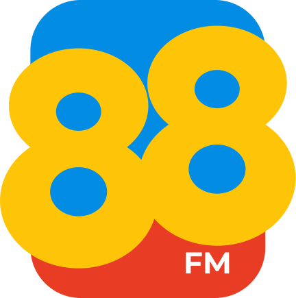

Rádio 88 FM · Proposta visual
No Ar com a identidade do programa
A capa ocupa toda a área da imagem. O mini player mantém a marca da Rádio 88 FM.
No Ar · Rádio 88 FM
NO AR

Disponível noGoogle Play
Baixe naApp Store
Rádio 88 FM
Artes reais do cadastro local. Prévia isolada: os controles não iniciam a transmissão nem alteram a grade.